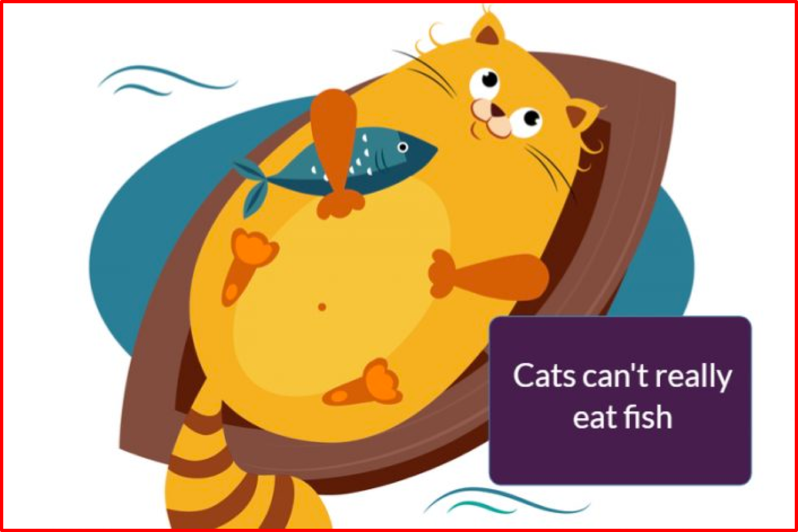
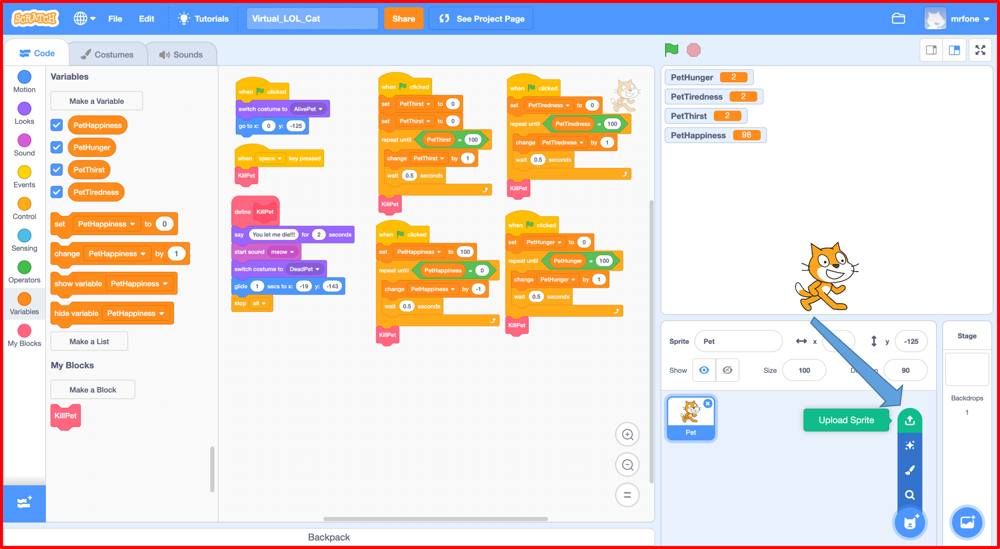
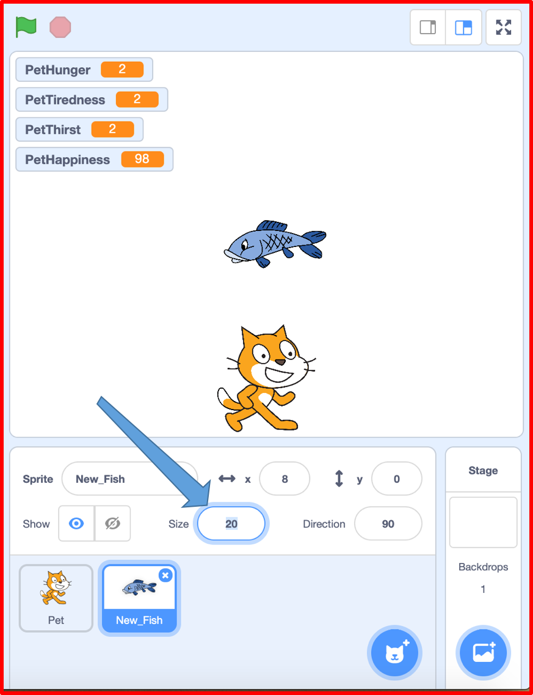
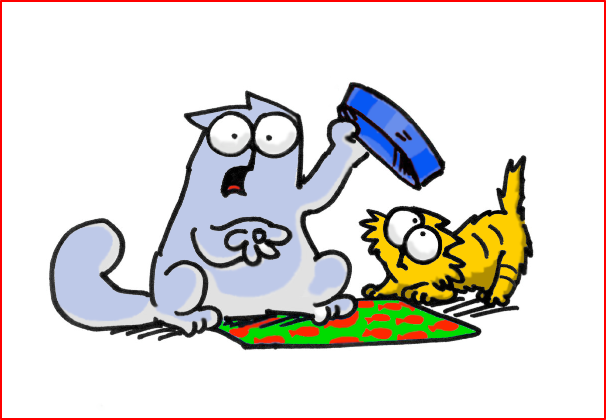
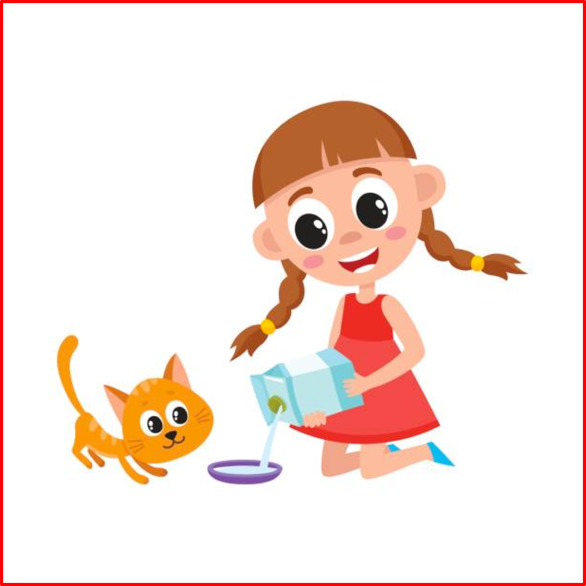
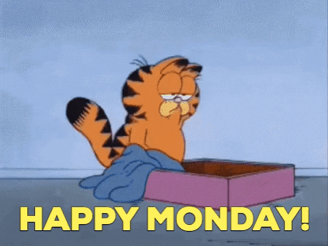
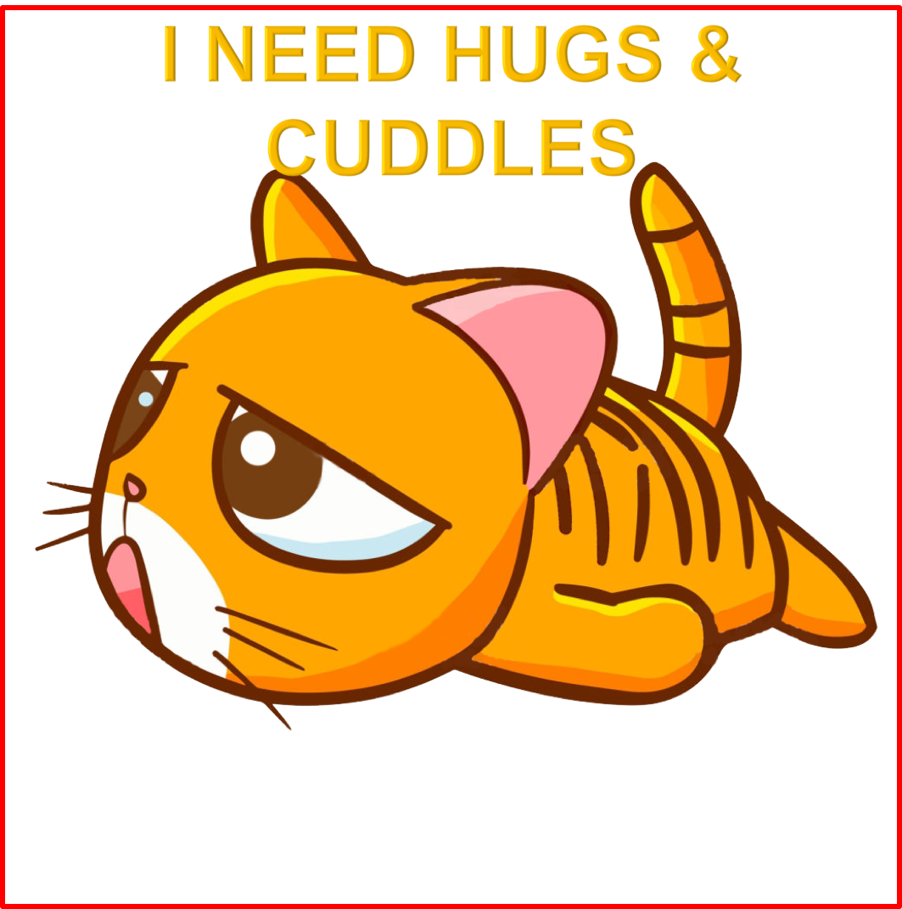

A Virtual LOLcat in Scratch
Table of Contents
Grey overlay
Pink
Green
Blue
Cream
Liliac
Purple
Yellow
1 Objectives
Developing Programming and Development, Algorithms, Literacy, Information Technology Learning Strands:
- Be able to create and use a new sprite.
- Be able to use keyboard interrupt events.
- Be able to use arithmetic operators and loops.
- Use correct grammar, punctuation and spelling of keywords throughout this project.
- Use a variety of software to manipulate and present digital content.
2 Feeding the pet

Research It
- At the moment, all we have is a script that kills the pet when it's hunger reaches 100.
- We need a way to
feed the pet, so that we canresetit's hunger back to 0. - To do this, we'll need a new sprite. You can either draw one, use an image form the Scratch library or use the Fish image below.
- If you also want to use this one, right-click on it and choose to save link as to save the image to your Year 7\Computer Science\MyLOLCat folder for uploading later.

Code It
- Next we need to import our image into Scratch, so that we can use it as a Sprite.
- In the Sprites Panel, click on the Upload Sprite button and choose your image of the pet food.

- You might need to edit the size of your Sprite in the Sprite Panel, and then position it somewhere sensible on the stage. See image below:

Code It
- Now we have a new sprite, we have a new place to add code.
- Click on your food sprite, and you should see a blank scripts area.
- To get back to the scripts you have written previously, you can click on your pet sprite.
- The following code goes with the PetFood Sprite not the Pet Sprite
when this sprite clicked set PetHunger to 0
- You Scratch code should look something like this:

Run It
- Test your programme.
- The PetHunger variable should
increase, but be reset to0, whenever the PetFood Sprite is clicked. - If it doesn't work then read back over the instructions, ask a friend and finally ask your teacher.
Code It: Improving our code
- To make the game more interesting, wouldn't it be better if when we clicked on the food item, it would
gradually reducedthe hunger levels instead of resetting them to zero, therefore making the game more challenging. - Firstly we need to introduce the idea of using
conditional statements, like: if I'm hungry then get something to eat! - Have a look at the following pseudocode and then try to create this using Scratch blocks on your PetFood Sprite.
when this sprite clicked if PetHunger is greater than zero then change PetHunger by -2 wait for 1 second.

3 Tiredness, Happiness and Thirst
Badge It
In the previous lesson you made variables for; PetHunger, PetTiredness, PetThirst and PetHappiness. To get your badge for this lesson you need to complete the following tasks. Complete all three and you'll get a platinum badge.
- Find or make an image to represent a drink for your pet. PetThirst should increase gradually and then be reset to 0 when the drink sprite is clicked. If it reaches 100, the pet should die.
- After you have finished this task, upload a screenshot of your code to Bournetolearn.com.
- Then click here to get your badge.

- Find or make an image to represent a bed for your pet. PetTiredness should increase gradually and then be reset to 0 when the bed sprite is clicked. If it reaches 100 the pet should die.
- After you have finished this task, upload a screenshot of your code to Bournetolearn.com.
- Then click here to get your badge.

- PetHappiness should start at 100 and gradually decrease until it hits 0, at which point the pet should die. If the pet sprite is clicked (representing stroking the pet), then it's happiness should be reset to 100.
- After you have finished this task, upload a screenshot of your code to Bournetolearn.com.
- Then click here to get your badge.
